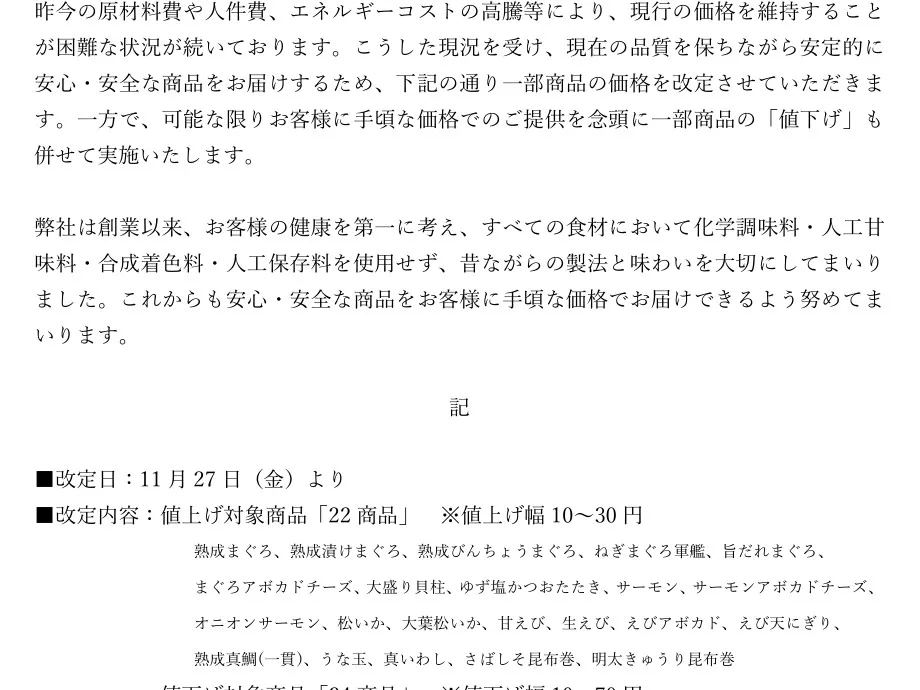
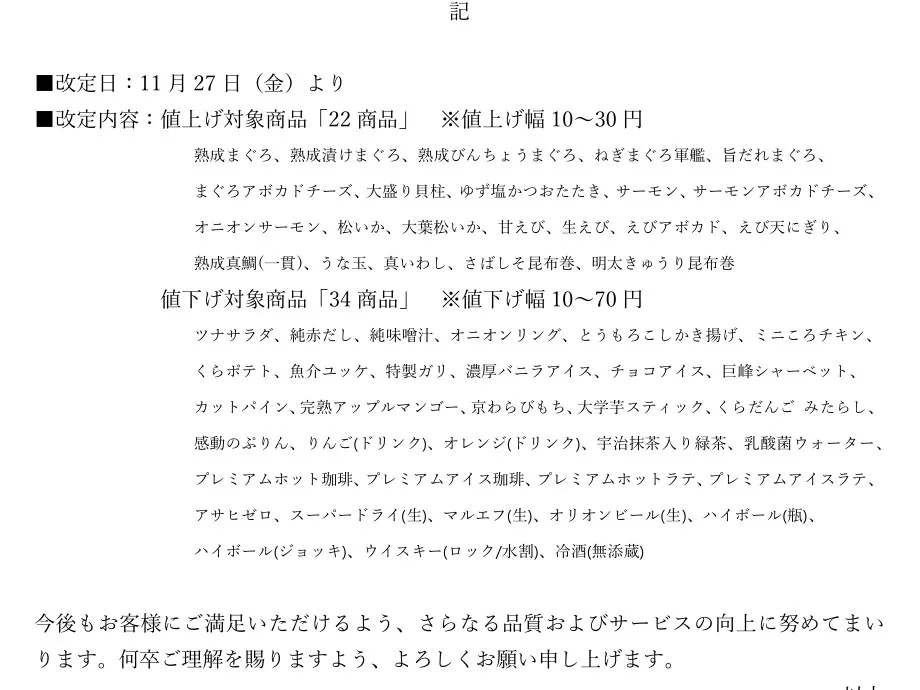

くら寿司で熟成まぐろなどの値上げ対象を注文する方は、11月26日までなら、27日の改定後と比べて対象商品あたり10〜30円の差があります。一方、くらポテトなど値下げ対象を選ぶ方は、11月27日から対象商品あたり10〜70円安くなります。
01値上げ・値下げの対象商品一覧
2026年11月25日時点の公式発表です。改定日は値上げも値下げも11月27日です。普段頼む品がどちらに入っているかを確認しましょう。
| 価格改定 | 変動幅 | 対象商品 |
|---|---|---|
| 値上げ（22商品） | 10〜30円 | 熟成まぐろ、熟成漬けまぐろ、熟成びんちょうまぐろ、ねぎまぐろ軍艦、旨だれまぐろ、まぐろアボカドチーズ、大盛り貝柱、ゆず塩かつおたたき、サーモン、サーモンアボカドチーズ、オニオンサーモン、松いか、大葉松いか、甘えび、生えび、えびアボカド、えび天にぎり、熟成真鯛（一貫）、うな玉、真いわし、さばしそ昆布巻、明太きゅうり昆布巻 |
| 値下げ（34商品） | 10〜70円 | ツナサラダ、純赤だし、純味噌汁、オニオンリング、とうもろこしかき揚げ、ミニころチキン、くらポテト、魚介ユッケ、特製ガリ、濃厚バニラアイス、チョコアイス、巨峰シャーベット、カットパイン、完熟アップルマンゴー、京わらびもち、大学芋スティック、くらだんご みたらし、感動のぷりん、りんご（ドリンク）、オレンジ（ドリンク）、宇治抹茶入り緑茶、乳酸菌ウォーター、プレミアムホット珈琲、プレミアムアイス珈琲、プレミアムホットラテ、プレミアムアイスラテ、アサヒゼロ、スーパードライ（生）、マルエフ（生）、オリオンビール（生）、ハイボール（瓶）、ハイボール（ジョッキ）、ウイスキー（ロック/水割）、冷酒（無添蔵） |

02来店日と注文を決める手順
- いつも注文する品を表で探します。名前の似た商品があるので、注文する商品名と照らし合わせます。
- 値上げ対象を中心に注文する予定なら改定前、値下げ対象を中心に頼む予定なら改定後を候補にします。
- 両方を頼むときは、寿司とサイドメニューを含めた注文全体で考えます。予算を決めている場合は、注文画面に出る価格を見てから追加する品を選びましょう。
例値上げ対象と値下げ対象を1品ずつ頼む場合の計算です。同じ注文を改定前と比べると、差の範囲は10円－70円＝60円安から、30円－10円＝20円高までです。これは発表された値幅から計算した範囲です。

03注文金額を比べるときの注意点
表の金額は商品の値段そのものではなく、改定前からの差です。値下げ対象の数が多いために、自分の会計も下がるとは限りません。たとえば、値上げ対象の寿司をよく頼む人と、値下げ対象のデザートや飲み物をよく頼む人では、同じ日に食べても改定の影響が変わります。外食を含めて支出を見直したい場合は、12月の家計への影響を世帯別に試算した記事も参考にできます。
04よくある質問
くら寿司の値上げはいつから？
11月27日からです。値下げも同じ日に始まります。
値上げはどのくらい？
対象は22商品で、値上げ幅は10〜30円です。熟成まぐろやサーモンなどが含まれます。
値下げするメニューは？
くらポテトや感動のぷりんなどが対象です。34商品が10〜70円値下げされます。
05まとめ
- 改定日は11月27日です。よく頼む品がどちらに入るか、一覧で確かめましょう。
- 寿司とサイドを一緒に頼むときは、注文全体で予算を考えると、改定の影響を把握しやすくなります。